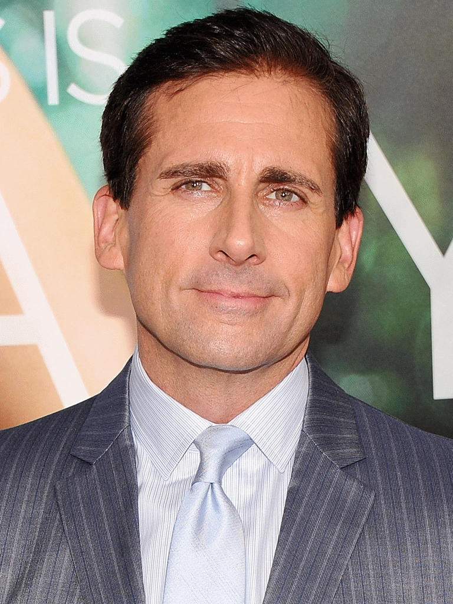

Biographical Information
Nombre: Michael Scoot
Genero: Masculino
March 15, 1965 (age 61) Scranton, Pennsylvania
Alias:
Ping
Michael the Magic
Michael Scarn
Michael Klump
Date Mike
Mike (by Darryl)
Blind Guy McSqueezy
Prison Mike
Caleb Crawdad
Master of Guidance
Michael Wonka
Reginald Poofta
Michael Scotch
Spiros
Orville Tootenbacher
Jesus Christ
Johnny Carson
Michael J Fox
Mr. Fox
Nicki Minaj
The Incredible Mr. Fox
Santa Bond
Beyoncé
Captain Bruisin'
Michael Jackson
Ryan's Girlfriend
Dennis the Menace
Eddie Murphy
Spicoli Guy
MC Mike Scott
Michael Snot
Elton
Mr. Scott (By The High School Kids)
Hot Tie Guy (By Pam)
Tito Jackson
Mike Tyson
Sheldon
Imformacion personal
Relationships:
Holly Flax (wife)Jan Levinson (ex-girlfriend)
Helene Beesly (ex-girlfriend)
Carol Stills (ex-girlfriend)
Donna Newton (ex-girlfriend)
Parents:
Jeff (stepfather)
Mother (unnnamed)
Children:
4 unnamed children>
Grandparents:
Barbara Keevis (grandmother)
Grancie (grandmother)
Others:
Luke Cooper (nephew)
All original series characters were adapted for the U.S. version. NBC programmer Tracy McLaughlin suggested Paul Giamatti to producer Ben Silverman for the role of Michael Scott, but the actor declined. Martin Short, Hank Azaria, and Bob Odenkirk were also reported to be interested. In January 2004, Variety reported Steve Carell of the popular Comedy Central program The Daily Show with Jon Stewart, was in talks to play the role. At the time, he was already committed to another NBC mid-season replacement comedy, Come to Papa. Due to Carell being unavailable, Bob Odenkirk was selected as Michael Scott and was part of the cast presented to NBC executives. However, Come to Papa was quickly canceled, allowing Carell to commit to The Office. Carell later stated he had only seen about half of the original pilot episode of the British series before he auditioned. He did not continue watching for fear that he would start copying Gervais' characterizations. On the audio commentary of the pilot episode, director Ken Kwapis says that Carell's unfamiliarity with the British version of The Office and their experience working together on Watching Ellie influenced him being cast as Scott.
wo supporting roles in films helped get the attention of audiences: Bruce Almighty, in which Carell plays Evan Baxter (an arrogant rival to Jim Carrey's character), who gets a humorous comeuppance while co-anchoring the news. In Anchorman: The Legend of Ron Burgundy, Carell plays another news personality, as slow-witted weatherman Brick Tamland. Although the series premiered to mediocre ratings, NBC renewed it for another season because of the anticipated success of Carell's movie The 40-Year-Old Virgin,[6] and the show subsequently became a rating success. Carell won a Golden Globe and Television Critics Association award in 2006 for his role. He also received Emmy nominations in 2006, 2007 and 2011 for his work in the series. Although The 40-Year-Old Virgin was a surprise success, Carell revealed in an interview with Entertainment Weekly that he had no plans to leave The Office. However, on the BBC Radio 5 Live Film Review show, he stated in an interview that his time on the show would probably end after his contract ran out after Season 7.[7] This was later confirmed on June 28, 2010, when Carell confirmed that the seventh season of the show was to be his last after his contract with NBC expired.
Dwight has the most respect for Michael, viewing him as a model for success, and is thrilled when asked to handle any task given to him, however ill-conceived it may be. Although on the surface, Michael usually appears dismissive of Dwight and generally views him as a suck-up, he is genuinely hurt and angry at the few times when Dwight has deceived him, such as when Dwight went over Michael's head to vie for the manager's job or when Dwight refused to reveal office secrets to Michael's new company, the Michael Scott Paper Company. In the episode "Heavy Competition" of Season 5, Dwight steals Michael's Rolodex and finds his own business card, on the back of which, Michael had written (before leaving Dunder Mifflin): "Dwight Schrute, tall, beets". Michael also cares how Dwight feels about him. After Michael beats Dwight at his own dojo, Michael finds out that Dwight no longer wanted Michael as his primary contact in case of an emergency which causes Michael to promote him from "Assistant to the Regional Manager" to "Assistant Regional Manager", with a three-month probational period. Dwight told Michael in Season 6 that Michael's pathetic career path hurt Dwight and he regretted working for him instead of taking a fast-track job at Home Depot, but they buried their differences later on. When Deangelo Vickers arrives to be the new Branch Manager, Dwight is depressed that he didn't get the job after Michael recommended him, only to learn from Gabe that Michael didn't recommend him after all. At first Dwight is angry with Michael, but they make amends when Michael gives him a letter of recommendation on his final day at Dunder Mifflin. They end the day with a paintball fight behind the building. In the series finale, Michael is the best man at Dwight's wedding after Jim arranges it.
Michael has one-sided affection for Ryan, which often makes Ryan uncomfortable. Examples of this are when Michael gives Ryan the "Hottest in the Office" award in "The Dundies", when Michael declares he would definitely want to have sex with Ryan in "The Fire" and when Michael gives Ryan a $400 iPod for the Secret Santa gift exchange, despite the 20-dollar limit. In "The Deposition", a page from Michael's diary reveals he describes Ryan as "just as hot as Jan, but in a different way." In multiple occasions, Michael behaves inappropriately around Ryan, including slapping Ryan's buttocks, pinching Ryan's nipples, staring constantly at Ryan from behind his window blind, pinning Ryan to sit on his lap and making kissing gestures toward Ryan while calling him the belle of the ball.
Michael is devastated when he finds out about Ryan's arrest for fraud, and much to the dismay of David Wallace, he later re-hires Ryan. In "Prince Family Paper", Michael acknowledges that his heart has led him astray before, naming Jan and Ryan as examples of this. In "Dream Team", Michael convinces Ryan to leave his job at the bowling alley and join his newly formed paper company. When working together, Ryan comes to respect Michael's skills as a salesman. In Season 7, Michael heavily invests in Ryan's WUPHF.com and won't agree to sell his majority shares when it is clear Ryan is exploiting Michael's goodwill and is incapable of saving the venture from bankruptcy.
Michael's obsession with Ryan is further shown in a number of deleted scenes. In one from "Diwali", Carol says that Michael constantly talks about Ryan's attractiveness and has begun stalking Ryan. In another from "Safety Training", Michael confesses that he will miss Ryan the most after dying, which angers Ryan. In a deleted scene of "Beach Games", Michael says he especially wants to see Ryan put a hot dog in his mouth. In "Night Out", Michael is in bed with Ryan asking "Do you miss us?," to which Ryan declines to answer
.Michael doesn't hesitate to compliment or criticize Pam for her looks and he frequently mentions her breasts. In the episode "Diwali" Michael mistakenly thinks that he and Pam have a connection, and is rejected when he tries to kiss her. Throughout their relationship, Pam has served as something of a shoulder angel for Michael by encouraging him to be more productive and discouraging his bad ideas, with varying degrees of success. She grows closer to Michael as he supports her goals in pursuing sales and art. Pam is visibly touched when, after many art show attendees dismiss her artwork, Michael is so impressed that he asks to buy her painting of their office building. Their relationship comes to a rocky point when he begins dating her mother Helene. This is only repaired after he breaks up with Helene and allows Pam to slap him in the face in the parking lot. He trusts and respects Jim, although when they were co-managers they clashed due to their polar-opposite management styles. In "Secret Santa", Michael mentions that in a future vision he sees himself and his future wife living next door to Jim and Pam and that their children will play together. He often also refers to Jim as his best friend in the office, although, based on his impersonation of Jim using surfer slang in "Michael's Last Dundies", does not have a very good understanding of his personality. While Jim and Pam are both shown to care about Michael, his clingy nature makes them reluctant to socialize with him outside of the office; such as when, after numerous unsuccessful invitations, Michael is forced to trick them in order to have them over for a disastrous dinner in the episode "Dinner Party." In a Season 5 episode, Michael also shows his admiration for Jim, when Jim wears a tuxedo to work and goes on and on about having a 'classy party' for the party planning committee, and frequently suggests all of the ideas Dwight had offered that Michael had then rejected, only to bother Dwight by having Michael accept the same ideas from him. During Cecilia Halpert's baptism, Michael approaches Pam referring to himself as "the godfather" while imitating Don Corleone, after which she sympathetically but emphatically asks him to acknowledge that he won't be Cece's godfather, he is disappointed but does so and is hurt to learn that the godparents are a couple they'd only recently met. Pam is shown to have a soft spot for Michael, such as when she consoles him after he finds Holly to be in a relationship with AJ, and when she advises him on how to propose to Holly. In "Goodbye, Michael" it is revealed that Michael is secretly planning to leave for Colorado at the end of his penultimate work day, thereby avoiding having to say goodbye to everyone. Jim figures this out and goes along with it, telling Michael that he will tell him what a great boss he was the following day at lunch, which they both know Michael will not be around for; Michael and Jim both get sentimental during this final conversation between them. The strength of his relationship with Pam is revealed as he continuously asks about her whereabouts, not wanting to leave without saying goodbye. Pam, who spent the better part of the day away from the office, finds Michael at the airport and says goodbye in a touching scene just as he's about to board his plane for Colorado. She watches from the window as his plane flies off. In a deleted scene of "The Inner Circle", Pam is flattered that Michael named his new dog "Pamela Beagsley." Pam later teases Jim that their second child will be named "little Michael Scott" displaying the friendship she had developed with her former boss. In the series finale, Jim convinces Michael to replace him as the "bestest mensch" at Dwight's wedding. Pam is so thrilled to see photos of Michael's children that she does not judge him for paying for two phones to hold all the pictures
.Despite liking the majority of the staff, Michael fiercely hates Human Resources Manager Toby Flenderson. This is mainly due to Toby's requirement to enforce the rules of proper office behavior that Michael loves to flout. He says that it is his job to make the office fun and Toby's to make it boring, for which Toby is a "jerky-jerk jerk-face" and makes them "sworn enemies". Michael once reasoned that "Toby is in HR, which technically means he works for Corporate. So he's really not a part of our family. He's also divorced so he's not a part of his family either". Michael also frequently brings up that Toby is divorced which possibly serves as another reason he looks down on and resents him. One possibility is that Toby reminds him of his step-father, whom Michael hates for marrying his mom after his parents got divorced. Another possibility is that Michael resents Toby for being a divorcee because he desires marriage. His longtime goal is to get rid of Toby and any attempts at reconciliation between the two usually backfire, with Michael resorting to name calling or jokes at Toby's expense. In the episode "Goodbye, Toby", Michael is thrilled when Toby decides to move to Costa Rica and gives as his going away present a rock with a note that reads "Suck on this". The next season, after Toby's replacement Holly is transferred, Michael is horrified when Toby returns to Dunder Mifflin. In "Frame Toby", he goes to great lengths to get him fired, trying to frame him for possession of marijuana (which turns out to be a caprese salad), and although he later admits his actions to the cops out of guilt when they initially prepare to arrest Toby (showing that his hatred does have limits), he ends up hating Toby even more when the latter criticizes him for wasting the cops time instead of being framed (it is possible that Michael is disgusted that Toby lets himself be abused). In "The Chump", Michael says if he had a gun with two bullets and was in a room with Adolf Hitler, Osama bin Laden, and Toby, he would shoot Toby twice (which disgusts the rest of the office). In "Nepotism", after Michael